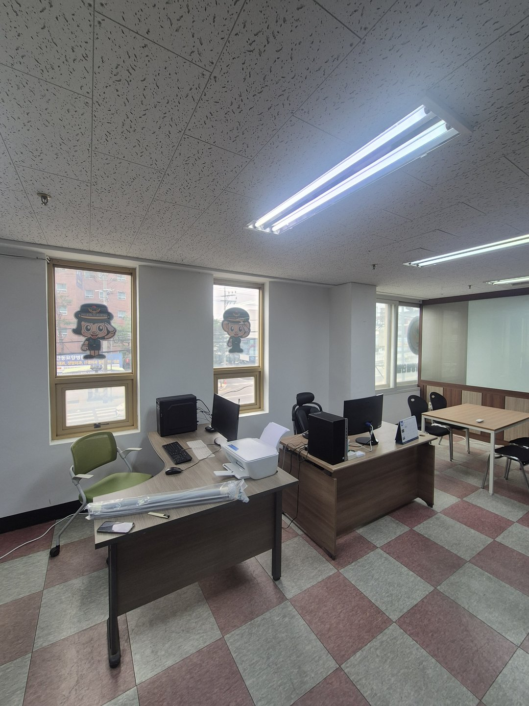
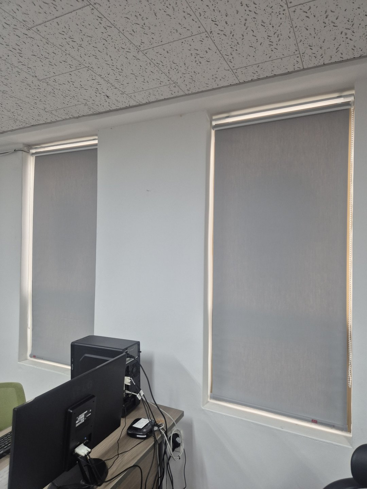
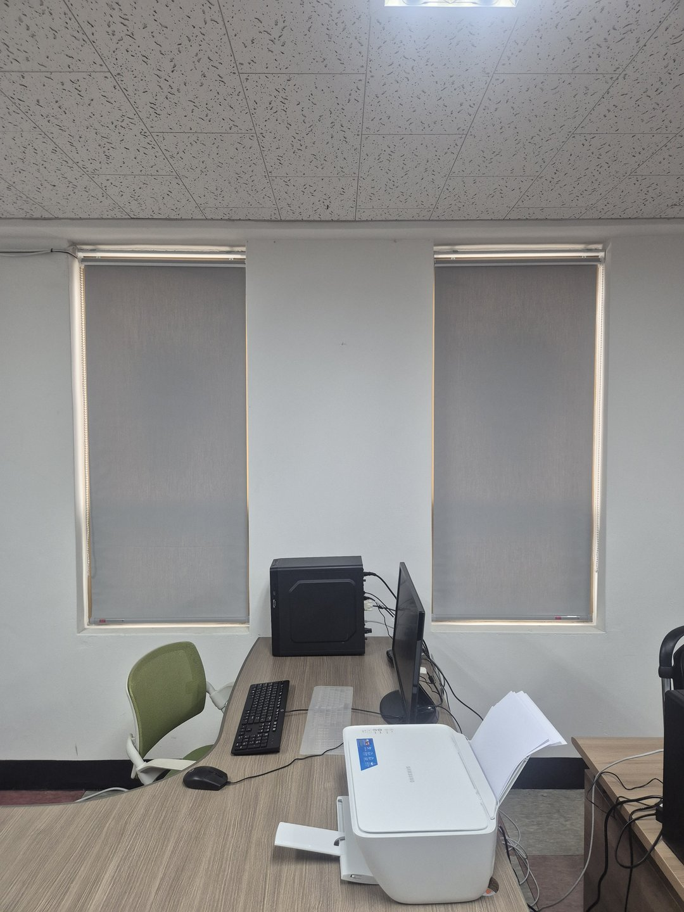
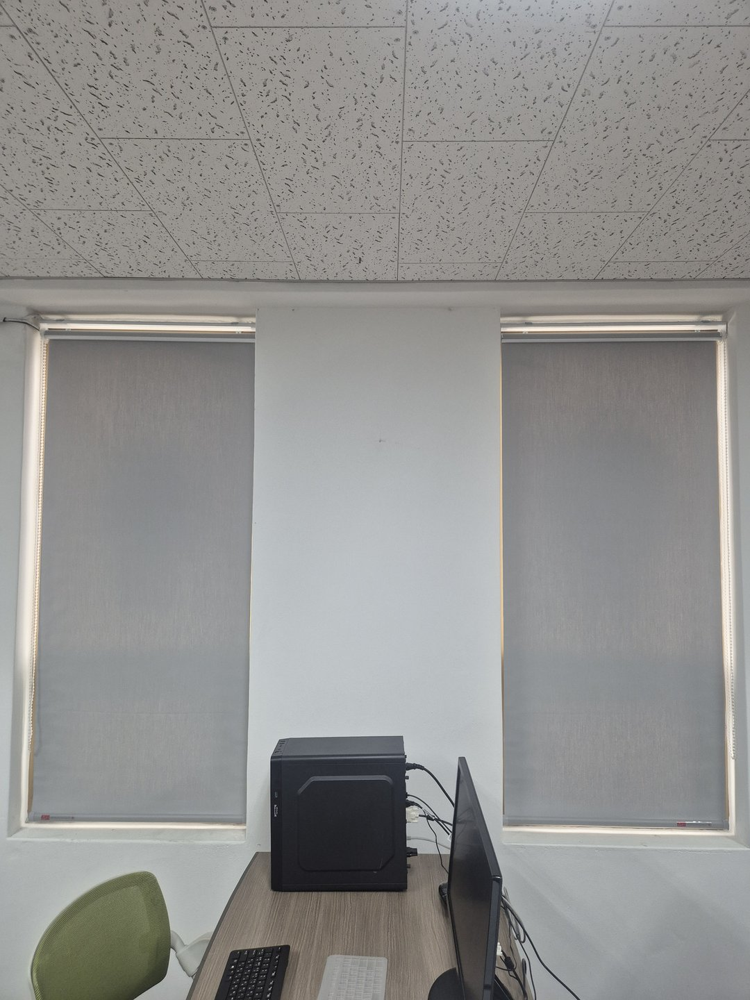
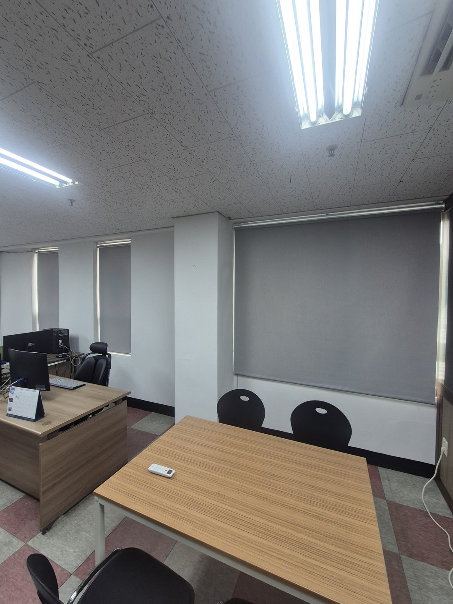
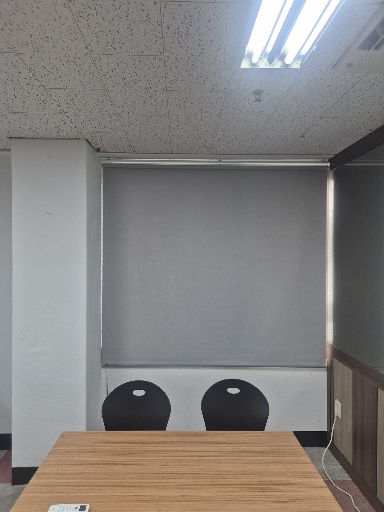
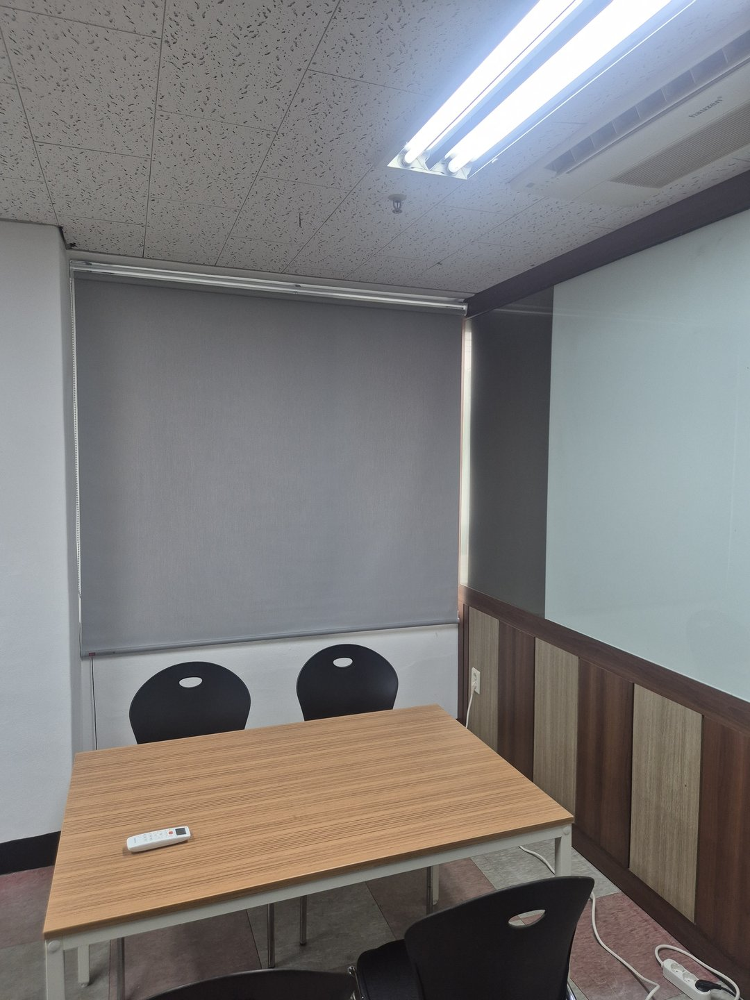
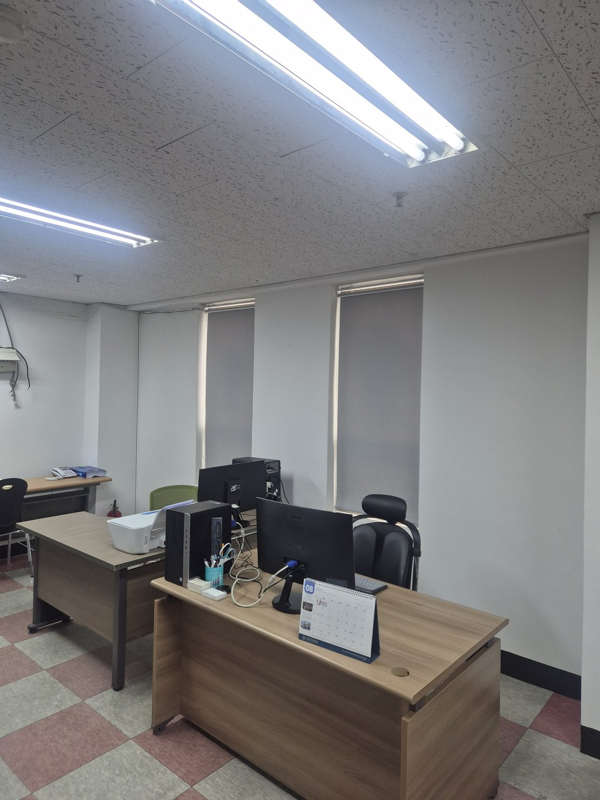

2026년 8월 27일 시공
안동 용상동 사무실
그레이 암막 블라인드 전관 시공후기

안동 용상동에 있는 사무실 시공입니다. 사무 공간에 창 네 개, 회의 공간에 큰 창 하나를 전부 같은 그레이 암막 원단으로 통일했습니다.
사장님이 상담 때 하신 말씀은 한 줄이었습니다. "낮에는 화면이 잘 안 보여요."
화면에 비친 창은 밝기를 올려도 안 없어집니다
이 사무실은 책상이 창을 마주보고 붙어 있었습니다. 모니터 뒤가 바로 창입니다. 모니터 표면은 완전한 무광이 아니라서, 뒤에 밝은 것이 있으면 그게 화면에 겹쳐 보입니다.
이때 화면 밝기를 올리면 글씨도 밝아지고 비친 창도 그대로 남습니다. 둘의 차이는 그대로라서 읽기가 편해지지 않습니다. 오히려 화면이 밝아진 만큼 눈이 더 피로해집니다.
고칠 자리는 모니터가 아니라 창입니다.

암막인데 흰색을 쓰면 눈부심이 남습니다
이번 현장에서 제일 중요했던 판단입니다.
흰색 암막 원단도 빛을 통과시키지는 않습니다. 그건 회색과 같습니다. 다른 건 원단 표면입니다. 흰색은 뒤에서 해를 정면으로 받으면 표면 자체가 밝아집니다. 빛이 실내로 들어온 건 아닌데, 창 모양의 밝은 사각형이 벽에 그대로 남습니다.
눈부심은 방에 들어온 빛의 양만으로 생기지 않습니다. 시야 안에서 밝은 곳과 어두운 곳의 차이가 클 때 생깁니다. 모니터는 어둡고 그 뒤 창 자리는 밝으면, 눈이 두 밝기를 계속 오갑니다. 이게 하루 여덟 시간 쌓입니다.
회색 원단은 해를 받아도 표면이 밝아지지 않습니다. 창 자리가 벽과 비슷한 밝기로 가라앉아서, 창이 있는 줄 모르게 됩니다. 다만 원단 종류와 현장 조건에 따라 체감은 달라질 수 있습니다.

같은 회색이라도 밝기를 골라야 합니다
회색이라고 다 같은 회색이 아닙니다. 너무 밝은 회색은 흰색과 비슷하게 빛나고, 너무 진한 회색은 창 자리가 검은 구멍처럼 보입니다. 벽보다 조금 어두운 정도가 제일 무난합니다.
이 사무실은 벽이 흰색이고 바닥이 붉은색과 회색 체크 타일이었습니다. 바닥에 이미 색이 두 개 들어가 있어서 여기에 색을 하나 더 얹으면 산만해집니다. 그래서 무채색 중간 밝기로 잡았습니다. 창이 눈에 안 띄는 게 목적이었습니다.


암막을 치면 사무실이 어두워지지 않나요
제일 많이 받는 질문입니다. 암막은 창만 막습니다.
이 사무실은 벽이 흰색이고 천장 조명이 넉넉했습니다. 원래도 낮에 형광등을 켜고 일하던 사무실이라 창을 막았을 때 체감 차이가 크지 않았습니다. 오히려 화면 반사가 사라져서 모니터 밝기를 낮춰도 글씨가 잘 보입니다. 볕이 필요한 날은 올리면 됩니다.
창 크기가 제각각이면 따로 뽑고 색은 하나로
사무 공간 창은 세로로 길고, 회의 공간 창은 가로로 넓었습니다. 이러면 하나로 길게 뽑을 수가 없습니다. 창마다 따로 제작해서 각각 걸었습니다. 해가 드는 창만 조절하면 되니 오히려 편합니다.
대신 원단과 색은 전부 똑같이 맞췄습니다. 밖에서 건물을 보면 창이 한 줄로 보입니다. 사무실은 안에서만 보이는 게 아니라 밖에서도 보입니다.


회의 공간은 기준이 다릅니다
사무 공간은 부분만 조절해도 충분한 경우가 많지만 회의실은 다릅니다. 화면을 같이 보는 순간에는 확실히 어두워야 합니다. 그래서 회의 공간 창은 완전히 내려서 쓰도록 잡고, 평소에는 올려둡니다.
넓은 창을 두 짝으로 나누면 가운데 선이 생깁니다. 회의실은 그 창을 정면으로 보고 앉는 자리가 많아서 선이 계속 눈에 들어옵니다. 그래서 나누지 않고 하나로 뽑되, 폭이 넓어 처질 수 있으니 봉을 한 단계 올렸습니다.

책상이 창에 붙어 있으면 줄 위치부터 봅니다
블라인드는 원단만 고르면 끝난 것 같지만 매일 만지는 건 줄입니다. 줄이 책상 안쪽으로 떨어지면 서류 위에 얹히고, 모니터 뒤로 넘어가면 손이 안 닿습니다. 걸리적거리면 안 만지게 되고, 안 만지면 조절이 되는 제품을 조절 없이 쓰게 됩니다.
그래서 줄을 책상 반대쪽 바깥으로 뺐습니다. 앉은 자리에서 손만 뻗으면 닿습니다. 나란히 붙은 두 창은 줄을 서로 바깥으로 벌려서 헷갈리지 않게 했습니다.
하단 바는 창틀 안쪽 선에 맞췄습니다. 바가 창틀 밖으로 나오면 아래에서 빛이 새 보입니다.

옆으로 새는 빛은 벽면 시공으로 잡았습니다
롤 방식은 원단이 창틀 안쪽에 들어가면 양옆에 틈이 생기고, 그 틈으로 들어온 선이 벽에 그대로 남습니다. 이 사무실은 창 위에 커튼 박스가 없어서 창틀 안이 아니라 벽면에 바깥으로 걸었습니다. 창보다 좌우로 넉넉히 물려서 옆 틈을 덮었습니다.
완전한 차단까지는 아니지만 벽에 빛의 선이 생기지는 않습니다.
일하는 중에 시공했습니다
사무실은 사람이 일하는 중에 들어가야 하는 경우가 많습니다. 이 현장도 직원분들이 자리에 계셨습니다. 창 하나당 브래킷 두 개를 벽에 고정하고 원단을 끼우면 끝이라 창 하나에 십오 분 정도 걸립니다. 책상 위 물건은 옮기지 않고 그대로 두고 작업했습니다.
자주 묻는 질문
Q. 안동도 방문 시공 되나요?
됩니다. 안동, 영주, 예천, 의성, 영덕, 문경, 상주, 영천, 포항, 경주 일대는 따솜커튼블라인드 이실장(010-2825-7275)이 직접 방문해 실측하고 시공합니다.
Q. 사무실 암막은 흰색이 나은가요 회색이 나은가요?
창이 해를 정면으로 받는 자리면 회색이 낫습니다. 흰색은 뒤에서 해를 받으면 원단 자체가 밝아져 창 모양이 그대로 남습니다. 해가 안 드는 방향이면 흰색이 훨씬 깔끔합니다.
Q. 그레이로 하면 사무실이 어두워지나요?
암막은 창만 막습니다. 벽이 밝고 조명이 넉넉하면 체감 차이가 크지 않습니다. 오히려 화면 반사가 사라져 모니터 밝기를 낮춰도 잘 보입니다.
Q. 사무실 전체를 한 번에 해야 하나요?
한 번에 하시면 원단과 색을 맞추기 쉽습니다. 나눠서 하셔도 되고, 나중에 같은 원단으로 이어 가면 됩니다.
Q. 창마다 크기가 다른데 값이 창 개수대로 나오나요?
아닙니다. 가로 폭이 넓어지면 봉이 길어져 처질 수 있어 한 단계 굵은 것으로 바꿉니다. 그래서 넓은 창 하나가 작은 창 두 개보다 비쌀 수 있습니다.
Q. 창 위에 커튼 박스가 없어도 되나요?
됩니다. 창틀 안이 아니라 벽면에 바깥으로 겁니다. 이때 원단을 창보다 좌우로 크게 뽑아 옆 틈을 덮습니다.
Q. 업무 시간에 작업이 가능한가요?
가능합니다. 창 하나에 십오 분 정도라 이 현장도 직원분들이 자리에 계신 채로 진행했습니다. 먼지가 나는 건 타공 순간뿐입니다.
Q. 관리는 어떻게 하나요?
마른 걸레로 먼지만 닦으시면 됩니다. 물수건으로 세게 문지르면 원단이 상할 수 있으니 눌러 닦는 쪽이 낫습니다.
마무리
사무실 블라인드는 창을 가리는 물건이 아니라, 하루 여덟 시간 화면을 보는 사람의 눈이 편한지를 정하는 물건입니다. 그래서 색 하나도 취향이 아니라 이유가 있어야 합니다.
낮에 화면이 잘 안 보인다고 느끼셨다면, 모니터가 아니라 그 뒤 창을 한 번 보시면 됩니다.
비슷한 시공


비슷한 시공이 필요하신가요?
창 전체가 나오게 찍은 사진 한 장 주시면 방문 전에 견적을 알려드립니다.
사무실이라면 책상이 창을 마주보고 있는지 옆으로 두고 있는지도 같이 보이게 찍어주시면 더 정확합니다.